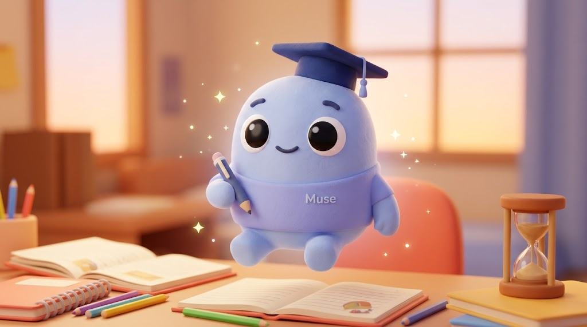

Encuentra tu plan
Elige la materia y el acompañamiento que necesitas.
Inglés, matemáticas y ese empujoncito que necesitas.
En Muse te acompañamos para que aprender
se sienta mucho más ligero.

Sin complicaciones. Sin prisas. Con mucho apoyo.
♡ Cuidamos nuestros cupos para darte la atención que mereces. Cada solicitud se confirma personalmente.
Nosotros te acompañamos.
Tú sigues creciendo.
Elige la materia y el acompañamiento que necesitas.
Revisamos tu solicitud y confirmamos que tenemos espacio para ti.
Recibe los datos de transferencia, registra tu pago y coordinamos contigo.
Aprender también empieza por preguntar.
Explicación de temas, práctica guiada y resolución de dudas. Tú realizas tus actividades y evaluaciones; nosotros te ayudamos a entenderlas.
Primero confirmamos tu cupo. Después verás los datos de transferencia en Mi espacio. Registra la referencia y el equipo verificará el pago.
Pausamos las solicitudes para cuidar la atención. No realices pagos hasta tener un cupo aprobado y los datos de transferencia.
El tuyo puede empezar aquí. ♡